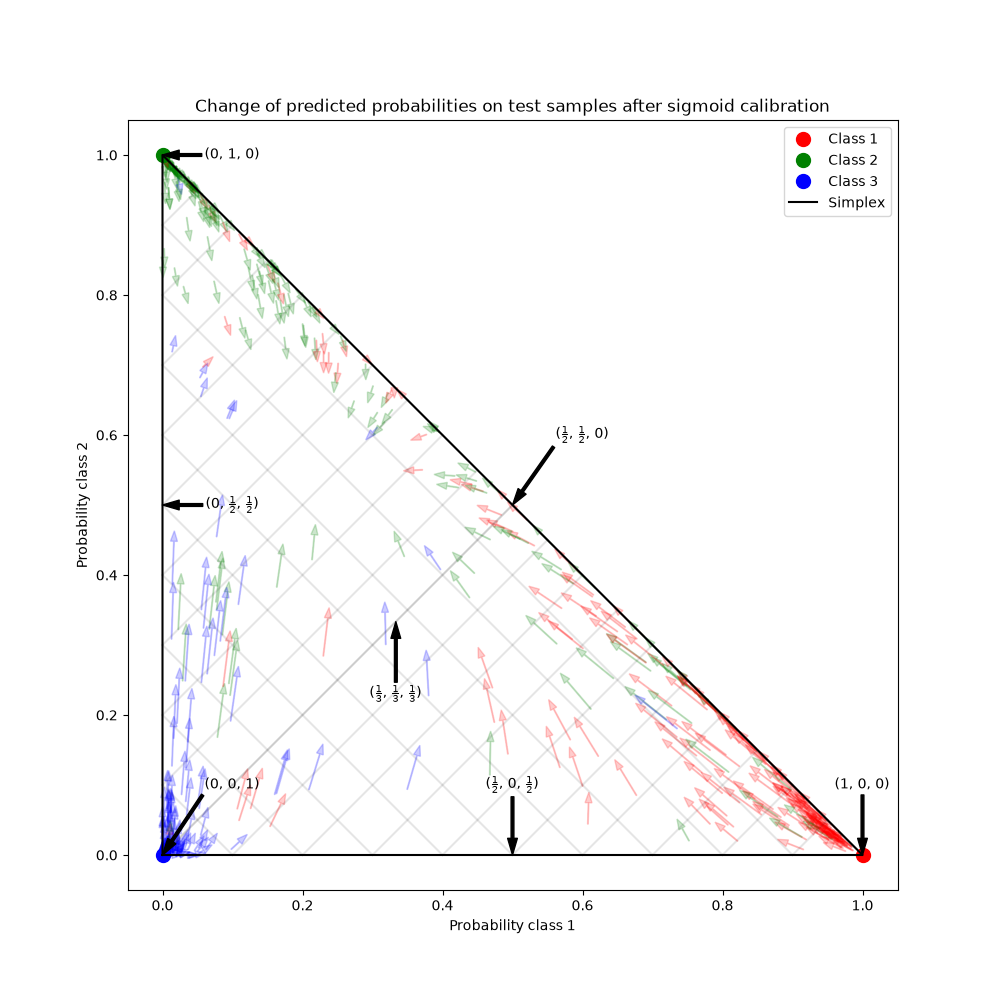
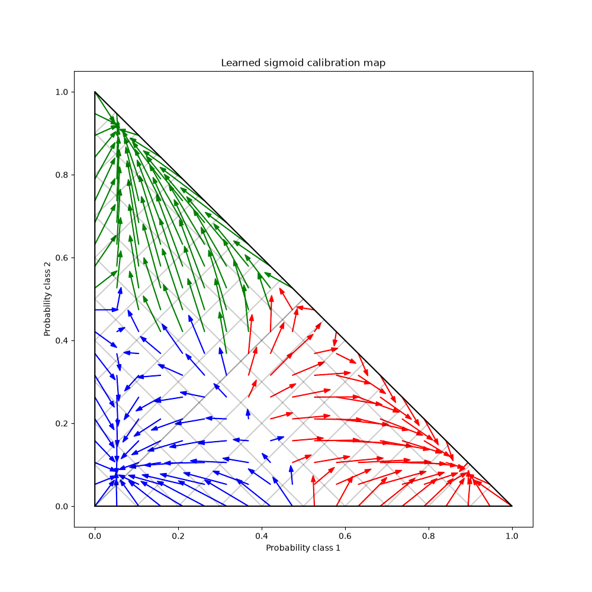

Note
Go to the end to download the full example code or to run this example in your browser via JupyterLite or Binder.
Probability Calibration for 3-class classification#
This example illustrates how sigmoid calibration changes predicted probabilities for a 3-class classification problem. Illustrated is the standard 2-simplex, where the three corners correspond to the three classes. Arrows point from the probability vectors predicted by an uncalibrated classifier to the probability vectors predicted by the same classifier after sigmoid calibration on a hold-out validation set. Colors indicate the true class of an instance (red: class 1, green: class 2, blue: class 3).
Data#
Below, we generate a classification dataset with 2000 samples, 2 features and 3 target classes. We then split the data as follows:
train: 600 samples (for training the classifier)
valid: 400 samples (for calibrating predicted probabilities)
test: 1000 samples
Note that we also create X_train_valid and y_train_valid, which consists
of both the train and valid subsets. This is used when we only want to train
the classifier but not calibrate the predicted probabilities.
# Authors: The scikit-learn developers
# SPDX-License-Identifier: BSD-3-Clause
import numpy as np
from sklearn.datasets import make_blobs
np.random.seed(0)
X, y = make_blobs(
n_samples=2000, n_features=2, centers=3, random_state=42, cluster_std=5.0
)
X_train, y_train = X[:600], y[:600]
X_valid, y_valid = X[600:1000], y[600:1000]
X_train_valid, y_train_valid = X[:1000], y[:1000]
X_test, y_test = X[1000:], y[1000:]
Fitting and calibration#
First, we will train a RandomForestClassifier
with 25 base estimators (trees) on the concatenated train and validation
data (1000 samples). This is the uncalibrated classifier.
from sklearn.ensemble import RandomForestClassifier
clf = RandomForestClassifier(n_estimators=25)
clf.fit(X_train_valid, y_train_valid)
To train the calibrated classifier, we start with the same
RandomForestClassifier but train it using only
the train data subset (600 samples) then calibrate, with method='sigmoid',
using the valid data subset (400 samples) in a 2-stage process.
from sklearn.calibration import CalibratedClassifierCV
from sklearn.frozen import FrozenEstimator
clf = RandomForestClassifier(n_estimators=25)
clf.fit(X_train, y_train)
cal_clf = CalibratedClassifierCV(FrozenEstimator(clf), method="sigmoid")
cal_clf.fit(X_valid, y_valid)
Compare probabilities#
Below we plot a 2-simplex with arrows showing the change in predicted probabilities of the test samples.
import matplotlib.pyplot as plt
plt.figure(figsize=(10, 10))
colors = ["r", "g", "b"]
clf_probs = clf.predict_proba(X_test)
cal_clf_probs = cal_clf.predict_proba(X_test)
# Plot arrows
for i in range(clf_probs.shape[0]):
plt.arrow(
clf_probs[i, 0],
clf_probs[i, 1],
cal_clf_probs[i, 0] - clf_probs[i, 0],
cal_clf_probs[i, 1] - clf_probs[i, 1],
color=colors[y_test[i]],
head_width=1e-2,
)
# Plot perfect predictions, at each vertex
plt.plot([1.0], [0.0], "ro", ms=20, label="Class 1")
plt.plot([0.0], [1.0], "go", ms=20, label="Class 2")
plt.plot([0.0], [0.0], "bo", ms=20, label="Class 3")
# Plot boundaries of unit simplex
plt.plot([0.0, 1.0, 0.0, 0.0], [0.0, 0.0, 1.0, 0.0], "k", label="Simplex")
# Annotate points 6 points around the simplex, and mid point inside simplex
plt.annotate(
r"($\frac{1}{3}$, $\frac{1}{3}$, $\frac{1}{3}$)",
xy=(1.0 / 3, 1.0 / 3),
xytext=(1.0 / 3, 0.23),
xycoords="data",
arrowprops=dict(facecolor="black", shrink=0.05),
horizontalalignment="center",
verticalalignment="center",
)
plt.plot([1.0 / 3], [1.0 / 3], "ko", ms=5)
plt.annotate(
r"($\frac{1}{2}$, $0$, $\frac{1}{2}$)",
xy=(0.5, 0.0),
xytext=(0.5, 0.1),
xycoords="data",
arrowprops=dict(facecolor="black", shrink=0.05),
horizontalalignment="center",
verticalalignment="center",
)
plt.annotate(
r"($0$, $\frac{1}{2}$, $\frac{1}{2}$)",
xy=(0.0, 0.5),
xytext=(0.1, 0.5),
xycoords="data",
arrowprops=dict(facecolor="black", shrink=0.05),
horizontalalignment="center",
verticalalignment="center",
)
plt.annotate(
r"($\frac{1}{2}$, $\frac{1}{2}$, $0$)",
xy=(0.5, 0.5),
xytext=(0.6, 0.6),
xycoords="data",
arrowprops=dict(facecolor="black", shrink=0.05),
horizontalalignment="center",
verticalalignment="center",
)
plt.annotate(
r"($0$, $0$, $1$)",
xy=(0, 0),
xytext=(0.1, 0.1),
xycoords="data",
arrowprops=dict(facecolor="black", shrink=0.05),
horizontalalignment="center",
verticalalignment="center",
)
plt.annotate(
r"($1$, $0$, $0$)",
xy=(1, 0),
xytext=(1, 0.1),
xycoords="data",
arrowprops=dict(facecolor="black", shrink=0.05),
horizontalalignment="center",
verticalalignment="center",
)
plt.annotate(
r"($0$, $1$, $0$)",
xy=(0, 1),
xytext=(0.1, 1),
xycoords="data",
arrowprops=dict(facecolor="black", shrink=0.05),
horizontalalignment="center",
verticalalignment="center",
)
# Add grid
plt.grid(False)
for x in [0.0, 0.1, 0.2, 0.3, 0.4, 0.5, 0.6, 0.7, 0.8, 0.9, 1.0]:
plt.plot([0, x], [x, 0], "k", alpha=0.2)
plt.plot([0, 0 + (1 - x) / 2], [x, x + (1 - x) / 2], "k", alpha=0.2)
plt.plot([x, x + (1 - x) / 2], [0, 0 + (1 - x) / 2], "k", alpha=0.2)
plt.title("Change of predicted probabilities on test samples after sigmoid calibration")
plt.xlabel("Probability class 1")
plt.ylabel("Probability class 2")
plt.xlim(-0.05, 1.05)
plt.ylim(-0.05, 1.05)
_ = plt.legend(loc="best")

In the figure above, each vertex of the simplex represents a perfectly predicted class (e.g., 1, 0, 0). The mid point inside the simplex represents predicting the three classes with equal probability (i.e., 1/3, 1/3, 1/3). Each arrow starts at the uncalibrated probabilities and end with the arrow head at the calibrated probability. The color of the arrow represents the true class of that test sample.
The uncalibrated classifier is overly confident in its predictions and incurs a large log loss. The calibrated classifier incurs a lower log loss due to two factors. First, notice in the figure above that the arrows generally point away from the edges of the simplex, where the probability of one class is 0. Second, a large proportion of the arrows point towards the true class, e.g., green arrows (samples where the true class is ‘green’) generally point towards the green vertex. This results in fewer over-confident, 0 predicted probabilities and at the same time an increase in the predicted probabilities of the correct class. Thus, the calibrated classifier produces more accurate predicted probabilities that incur a lower log loss
We can show this objectively by comparing the log loss of
the uncalibrated and calibrated classifiers on the predictions of the 1000
test samples. Note that an alternative would have been to increase the number
of base estimators (trees) of the
RandomForestClassifier which would have resulted
in a similar decrease in log loss.
Log-loss of:
- uncalibrated classifier: 1.327
- calibrated classifier: 0.549
We can also assess calibration with the Brier score for probabilistics predictions (lower is better, possible range is [0, 2]):
from sklearn.metrics import brier_score_loss
loss = brier_score_loss(y_test, clf_probs)
cal_loss = brier_score_loss(y_test, cal_clf_probs)
print("Brier score of")
print(f" - uncalibrated classifier: {loss:.3f}")
print(f" - calibrated classifier: {cal_loss:.3f}")
Brier score of
- uncalibrated classifier: 0.308
- calibrated classifier: 0.310
According to the Brier score, the calibrated classifier is not better than the original model.
Finally we generate a grid of possible uncalibrated probabilities over the 2-simplex, compute the corresponding calibrated probabilities and plot arrows for each. The arrows are colored according the highest uncalibrated probability. This illustrates the learned calibration map:
plt.figure(figsize=(10, 10))
# Generate grid of probability values
p1d = np.linspace(0, 1, 20)
p0, p1 = np.meshgrid(p1d, p1d)
p2 = 1 - p0 - p1
p = np.c_[p0.ravel(), p1.ravel(), p2.ravel()]
p = p[p[:, 2] >= 0]
# Use the three class-wise calibrators to compute calibrated probabilities
calibrated_classifier = cal_clf.calibrated_classifiers_[0]
prediction = np.vstack(
[
calibrator.predict(this_p)
for calibrator, this_p in zip(calibrated_classifier.calibrators, p.T)
]
).T
# Re-normalize the calibrated predictions to make sure they stay inside the
# simplex. This same renormalization step is performed internally by the
# predict method of CalibratedClassifierCV on multiclass problems.
prediction /= prediction.sum(axis=1)[:, None]
# Plot changes in predicted probabilities induced by the calibrators
for i in range(prediction.shape[0]):
plt.arrow(
p[i, 0],
p[i, 1],
prediction[i, 0] - p[i, 0],
prediction[i, 1] - p[i, 1],
head_width=1e-2,
color=colors[np.argmax(p[i])],
)
# Plot the boundaries of the unit simplex
plt.plot([0.0, 1.0, 0.0, 0.0], [0.0, 0.0, 1.0, 0.0], "k", label="Simplex")
plt.grid(False)
for x in [0.0, 0.1, 0.2, 0.3, 0.4, 0.5, 0.6, 0.7, 0.8, 0.9, 1.0]:
plt.plot([0, x], [x, 0], "k", alpha=0.2)
plt.plot([0, 0 + (1 - x) / 2], [x, x + (1 - x) / 2], "k", alpha=0.2)
plt.plot([x, x + (1 - x) / 2], [0, 0 + (1 - x) / 2], "k", alpha=0.2)
plt.title("Learned sigmoid calibration map")
plt.xlabel("Probability class 1")
plt.ylabel("Probability class 2")
plt.xlim(-0.05, 1.05)
plt.ylim(-0.05, 1.05)
plt.show()

One can observe that, on average, the calibrator is pushing highly confident predictions away from the boundaries of the simplex while simultaneously moving uncertain predictions towards one of three modes, one for each class. We can also observe that the mapping is not symmetric. Furthermore some arrows seem to cross class assignment boundaries which is not necessarily what one would expect from a calibration map as it means that some predicted classes will change after calibration.
All in all, the One-vs-Rest multiclass-calibration strategy implemented in
CalibratedClassifierCV should not be trusted blindly.
Total running time of the script: (0 minutes 1.340 seconds)
Related examples